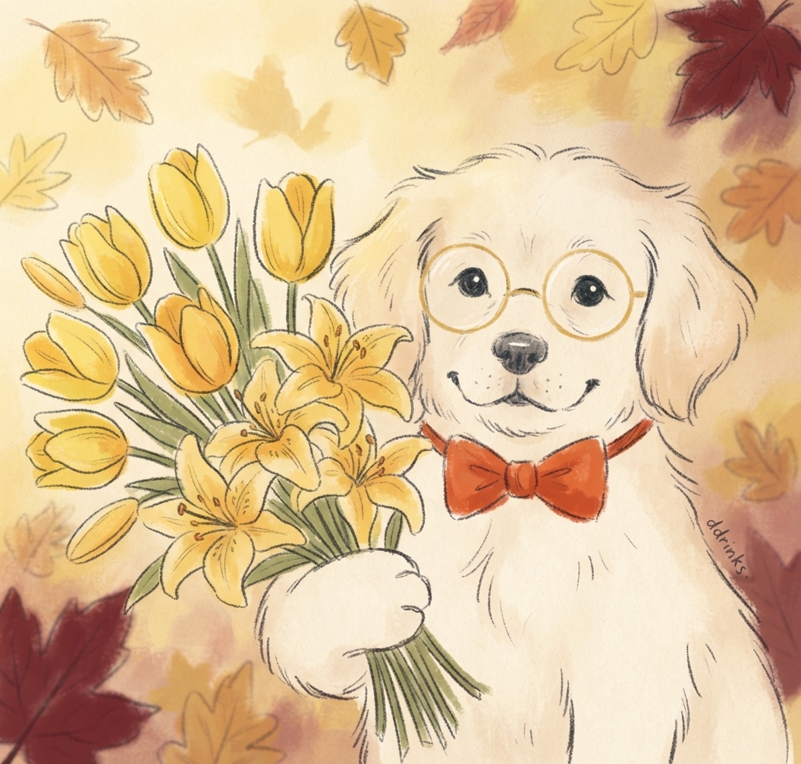

Para mi princesa de mi corazón,
Que estás lejos pero habitas cada latido de mi corazón

Mi carta para ti en este 21 de Septiembre...
Mi amor, hoy es 21 de septiembre y daría absolutamente todo por estar tocando la puerta de tu hogar en este instante, abrazarte con el alma entera y entregarte en persona este ramo gigante de tulipanes y lirios amarillos que tanto esperabas.
Sé que la distancia física hoy nos separa y nos obliga a estar en lugares distintos, pero quiero que tengas la certeza de que el amor puro y sincero que siento por ti no conoce de kilómetros ni de pantallas.
Como hoy no puedo dártelas directamente en tus manos, he querido crear este mágico espacio digital solo para ti. Que estas flores amarillas caigan sin cesar en tu pantalla como símbolo de que mi cariño por ti fluye todos los días sin parar, recordándote que cada pétalo lleva impreso un "te amo" gigante hasta el día en que por fin podamos fundirnos en un abrazo eterno.